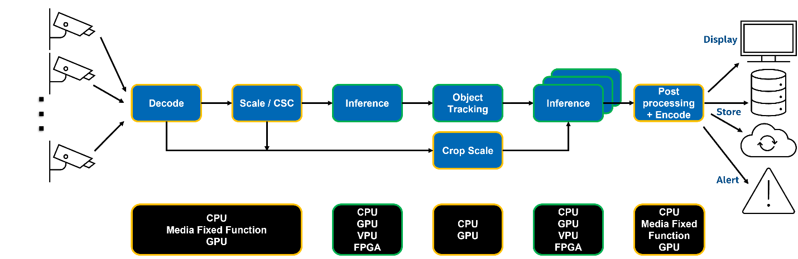

Intel® Deep Learning Streamer#
Intel® Deep Learning Streamer (Intel® DL Streamer) is an open-source streaming media analytics framework, based on GStreamer* multimedia framework, for creating complex media analytics pipelines for the Cloud or at the Edge, and it includes:
Intel® DL Streamer Pipeline Framework for designing, creating, building, and running media analytics pipelines. It includes C++ and Python APIs.
Intel® DL Streamer Pipeline Server for deploying and scaling media analytics pipelines as micro-services on one or many compute nodes. It includes REST APIs for pipelines management.
Intel® DL Streamer Pipeline Zoo for benchmarking and optimizing performance of media analytics pipelines. It includes catalog of ready to use media analytics pipelines.
Media analytics is the analysis of audio & video streams to detect, classify, track, identify and count objects, events and people. The analyzed results can be used to take actions, coordinate events, identify patterns and gain insights across multiple domains: retail store and events facilities analytics, warehouse and parking management, industrial inspection, safety and regulatory compliance, security monitoring, and many others.
Media analytics pipelines transform media streams into insights through audio / video processing, inference, and analytics operations across multiple IP blocks.
High-performance Media Analytics solutions are difficult to build, deploy, and benchmark:
Require deep expertise in multiple domains, including media processing and Deep Learning based AI inferencing frameworks and tools (e.g., FFmpeg*, GStreamer*, OpenCV*, OpenVINO™ toolkit, PyTorch*, TensorFlow*, ONNX*)
Require system level, SW, and HW expertise (e.g., fixed function HW, programmable media, host/accelerator buffer sharing, CPU Core & thread allocation, wide range of system configurations and their trade-offs)
Require expertise across CPU classes, SKUs, and their generations, in addition to expertise in integrated & discrete HW accelerators and their interactions with CPUs and rest of the host system (e.g., CPUs, integrated GPUs, discrete GPUs and VPUs)
Intel® DL Streamer makes Media Analytics easy:
Get better performance while writing less code
Quickly develop, optimize, benchmark, and deploy video & audio analytics pipelines in the Cloud and at the Edge
Analyze video & audio streams, create actionable results, capture, and send results to the cloud
Leverage the efficiency and computational power of Intel® hardware platforms
Write more portable code across Intel® hardware platforms, CPU & xPU classes and generations
Leverage GStreamer* open-source project community investments in new features & bug-fixes
Leverage NNStreamer* selected AI inferencing elements via pipeline inter-operability
Customize and extend your solution by reviewing, analyzing, and modifying Intel® DL Streamer open-sourced code
Intel® DL Streamer SW Stack#
Intel® DL Streamer uses OpenVINO™ Runtime inference back-end optimized for Intel hardware platforms and supports over 70 NN Intel and open-source community pre-trained models and models converted from other training frameworks formats using OpenVINO™ toolkit Model Optimizer. These models include object detection, object classification, human pose detection, sound classification, semantic segmentation, and other use cases: SSD, MobileNet, YOLO, Tiny YOLO, EfficientDet, ResNet, FasterRCNN, and other models.
Intel® DL Streamer provides over two dozen samples, demos and reference apps for the most common media analytics use cases which are included in Intel® Deep Learning Streamer Pipeline Framework, Intel® DL Streamer Pipeline Server, Intel® DL Streamer Pipeline Zoo, Open Visual Cloud, and Intel® Edge Software Hub with C++ and/or Python: Action Recognition, Face Detection and Recognition, Draw Face Attributes, Audio Event Detection, Vehicle and Pedestrian Tracking, Human Pose Estimation, Metadata Publishing, Smart City Traffic and Stadium Management, Intelligent Ad insertion, single- & multi- channel video analytics pipelines benchmark, and other use cases.
Intel® DL Streamer offers a long list of models and samples optimized for Intel hardware platforms which could be used as a reference or a starting point for a wide range of applications and system configurations. These models and samples are a quick & easy way to reach high performance, then benchmark and optimize your application on your system.
Intel® DL Streamer is already used by many partners and customers leading solutions, including Open Visual Cloud Media Analytics services, NTT Software Innovation Center, AIVID TECHVISION, Videonetics Technology Pvt. Limited, and others.
Testimonials#
“Intel® DL Streamer (OpenVINO™) is an easy-to-use and extensible application framework, which provides a well-organized set of classes and methods. In particular, Intel® DL Streamer allows us to add user-defined post processing with gvapython elements. This feature will help us develop AI-based video analytics applications for NTT’s businesses, addressing various customer demands responsively.” — Takeharu Eda, Senior Research Engineer, NTT Software Innovation Center |
|
“Intel® DL Streamer Pipeline Server has helped TIBCO Software to develop and optimize Project AIR solution with less effort and shorter TTM, and to deliver better user experience that includes no-code data pipelines. Project AIR was able to easier deploy and expose optimized video analytics pipelines as microservices accessible for consumption via REST APIs.” — Miguel Torres, Director of the Americas - Office of the CTO at TIBCO Software |
* Other names and brands may be claimed as the property of others.